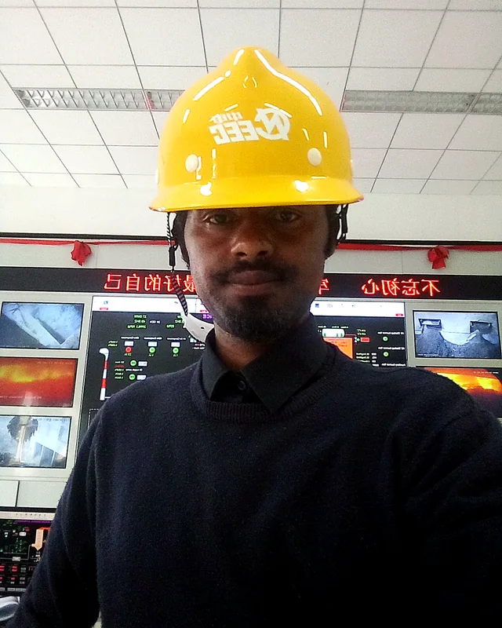

Investor-facing capability statement
Dr. Mintesnot Gizaw Terefe
Waste-to-Energy & Bioenergy Project Development — Africa

Value proposition
Independent academic and energy-project advisor supporting investors, developers and public institutions from waste-stream opportunity screening through technical feasibility, business modelling, design basis, finance readiness, ESG and capacity building.
Core services
- Feedstock characterisation and supply-chain risk
- Technology screening and process concept
- Mass and energy balance; preliminary sizing
- CAPEX/OPEX, NPV/IRR, DSCR and sensitivity
- Revenue, tariff, tipping-fee and offtake models
- Environmental safeguards and lifecycle planning
- Investor/lender materials and technical due diligence
- Training, local capability and owner-side support
Relevant experience
- Waste-to-Energy courses for undergraduate and postgraduate students
- Postgraduate supervision on renewable and waste-conversion projects
- Reppie engagement on feedstock efficiency and generation performance
- Small-scale municipal solid waste conversion concept for Ethiopia
- Biogas digester design and installation supervision with development partners
- Broader feasibility, mini-grid, productive-use, EV charging and ESG advisory
Professional foundation
Assistant Professor, Sustainable Energy Technology, AASTU
Adjunct Assistant Professor, Center for Environmental Science, AAU
Consultant, renewable-energy feasibility and business development
Qualifications
PhD, Energy & Climate / Environmental Science (2024)
MBA, Industrial Management (2017)
MSc, Environmental Physics (2012)
BSc, Physics / Applied Physics (2008)
Project discussion
Addis Ababa, Ethiopia • Africa-focused assignments